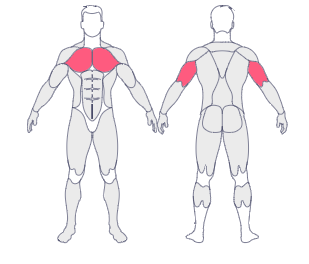
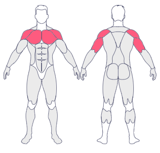

Treino de Segunda-feira
Supino Inclinado com Halteres, 4x8-12
 MuscleWikiSupino Reto (Barra ou Máquina), 3x8-12
 MuscleWikiCrucifixo Inclinado (Halteres), 3x10-15
MuscleWikiMergulho em Barras Paralelas, 3x12-15
MuscleWikiVoador (Peck Deck), 3x12-15
MuscleWikiAbdominal Infra (Elevação de pernas), 4x15-20
MuscleWikiTreino de Terça-feira
Puxada Alta (Pegada Aberta), 4x8-12
MuscleWikiRemada Curvada (Barra Livre),4x8-12
MuscleWikiRemada Serrote (Unilateral), 3x10-12
MuscleWikiPuxada Triângulo (Fechada), 3x10-12
MuscleWikiPulldown (Polia Alta), 3x12-15
MuscleWikiLevantamento Terra, 3x6-8
MuscleWikiPanturrilha Sentado (Solear), 4x15-20
MuscleWikiTreino de Quarta-feira
Leg Press 45º, 4x10-12
MuscleWikiCadeira Extensora, 4,x12-15
MuscleWikiStiff com Barra, 4x10
MuscleWikiMesa Flexora, 3x12
MuscleWikiCadeira Flexora, 4x12
MuscleWikiTreino de Quinta-feira
Elevação Lateral (Halteres), 4x12-15
MuscleWikiElevação Lateral na Polia (Unilateral), 3x12-15
MuscleWikiElevação Frontal (Barra ou Corda), 3x12-15
MuscleWikiTreino de Sexta-feira
Tríceps Pulley (Corda), 4x10-12
MuscleWikiTríceps Francês (Halteres), 3x10-12
MuscleWikiRosca Alternada com Rotação, 4x10-12
MuscleWikiTreino de Sábado
Nenhum treino agendado para hoje. Clique em "Adicionar Exercício" para começar!
Treino de Domingo
Nenhum treino agendado para hoje. Clique em "Adicionar Exercício" para começar!